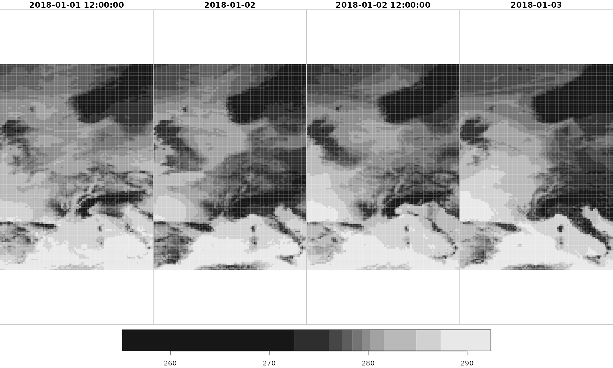
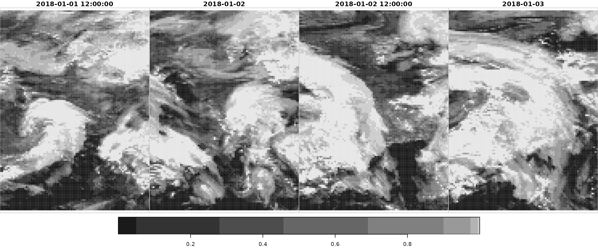
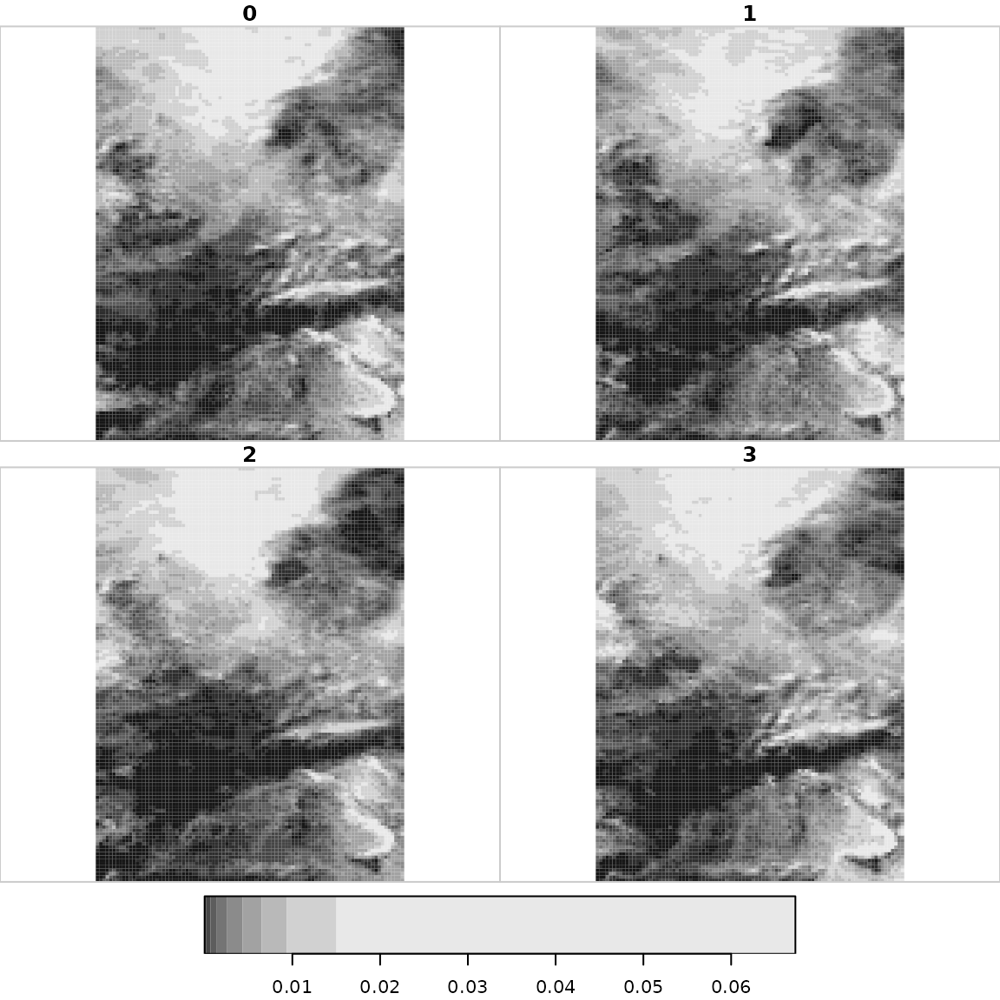

High-resolution forecasts
The first part showas an example how to access/download high-resolution forecasts (type = "hr"), the second part how to access ensemble forecasts.
Specify data to be downloaded
TODO: Description
# Loading the package
library("eupp")
# Create 'dates' vector; character vectors (ISO format) work fine
dates <- c("2018-01-01", "2018-01-08", "2018-01-15")
# Create custom configuration
conf <- eupp_config(product = "forecast",
level = "surface",
type = "hr", # high-resolution forecast run
date = dates, # dates
parameter = c("2t", "tcc"), # single parameter
steps = seq(12, 96, by = 12), # 12-hrly +12 to +96
cache = "_cache") # cache is not requiredTODO: Adjust text The function eupp_config() returns an object of class eupp_config which contains all required information to download the data set.
print(conf)## EUPP Config
## Product: forecast (fcs)
## Level: surface
## Type: hr
## Date(s): 2018-01-01,2018-01-08,2018-01-15
## Parameter: 2t, tcc
## Steps: 12, 24, 36, 48, 60, 72, 84, 96
## Version: 0
## Cache: _cache
## Area: not definedDownloading data
TODO: Adjust text As for all gridded data sets, three options exist for downloading the data. eupp_download_gridded() allows to download and store the data set on disc (GRIB version 1 or NetCDF). Alternatively the data can be retrieved as stars object.
Note that getting the data in the NetCDF format and retrieving the data as stars object require the ecCodes tools to be installed.
# Retrieving the data set defined by 'config' as stars object
devtools::load_all("../")## ℹ Loading eupp##
## By downloading data from this dataset, you agree to the terms and conditions defined in
## https://github.com/retostauffer/eupp/blob/main/README.md
## If you do not agree with such terms, do not download the data.
library("stars")
data <- eupp_get_gridded(conf)## Converting grib file to netcdf
## t2m, tcc,## Warning: ignoring unrecognized unit: (0 - 1)
## Warning: ignoring unrecognized unit: (0 - 1)Interpolate data
Interpolating data (see Gridded Analysis for more information).
library("sf")
# Create simple features data.frame; define locations
locations <- data.frame(name = c("Innsbruck", "Brussels"),
lon = c(11.39, 4.35),
lat = c(47.27, 50.85))
locations <- st_as_sf(locations, coords = c("lon", "lat"))
# Perform interpolation based on stars::st_extract
interpolated <- st_extract(data, locations, bilinear = TRUE)
# Interpolate data (bilinear); conver to data.frame
# Note that some information is not carried over (initialization date/time)
interpolated_df <- as.data.frame(interpolated)
head(interpolated_df)## geometry time t2m tcc
## 1 POINT (11.39 47.27) 2018-01-01 12:00:00 272.0790 0.9999246
## 2 POINT (4.35 50.85) 2018-01-01 12:00:00 280.7002 1.0000000
## 3 POINT (11.39 47.27) 2018-01-02 00:00:00 268.0749 0.9993638
## 4 POINT (4.35 50.85) 2018-01-02 00:00:00 278.4105 0.9119369
## 5 POINT (11.39 47.27) 2018-01-02 12:00:00 271.1869 0.4850379
## 6 POINT (4.35 50.85) 2018-01-02 12:00:00 279.3429 0.9912826
stars functionality
As eupp_get_gridded() returns an object of class eupp_stars which inherits from stars, complete stars functionality can be for plotting or subsetting.
# 4 Dimensions, the first one is along variables
names(data)## [1] "t2m" "tcc"
dim(data)## x y time
## 93 125 24
# var x y time
plot(data["t2m", , , 1:4])
plot(data["tcc", , , 1:4])
Ensemble forecasts
Works similar to accessing high-resolution forecasts except that the type is "ens". The additional argument can be specified to download specific perturbations (or forecast members). If not set, all ensemble members plus the control forecast run (member = 0) will be downloaded.
Specify data to be downloaded
# Loading the package
library("eupp")
# Create 'dates' vector; character vectors (ISO format) work fine
dates <- c("2018-01-01", "2018-01-08", "2018-01-15")
# Create custom configuration
conf <- eupp_config(product = "forecast",
level = "surface",
type = "ens", # high-resolution forecast run
date = "2017-01-02", # dates
parameter = "cp", # one parameter
steps = 120, # only +10 days forecast
members = 0:3, # control run + members 1, 2, 3
cache = "_cache") # cache is not requiredDownloading data
In case the data is required as GRIB 1 or NetCDF file please just use eupp_download_gridded() instead of eupp_get_gridded() which will return an eupp_stars object.
library("stars")
data <- eupp_get_gridded(conf)## Converting grib file to netcdf## Warning in CPL_read_gdal(as.character(x), as.character(options),
## as.character(driver), : GDAL Message 1: The dataset has several variables
## that could be identified as vector fields, but not all share the same primary
## dimension. Consequently they will be ignored.## Warning in CPL_read_gdal(as.character(x), as.character(options),
## as.character(driver), : GDAL Message 1: dimension #1 (number) is not a Time
## dimension.## Warning in CPL_read_gdal(as.character(x), as.character(options),
## as.character(driver), : GDAL Message 1: The dataset has several variables
## that could be identified as vector fields, but not all share the same primary
## dimension. Consequently they will be ignored.## Warning in CPL_read_gdal(as.character(x), as.character(options),
## as.character(driver), : GDAL Message 1: dimension #1 (number) is not a Time
## dimension.
dim(data)## x y number time
## 93 125 4 1
st_get_dimension_values(data, "number")## [1] 0 1 2 3TODO: Adjust text
plot(data) # First 'time' all members
# var x y m time
plot(data["cp", , , 1, 1]) # First 'number' (member 0)